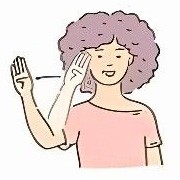
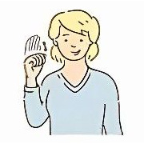
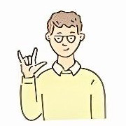
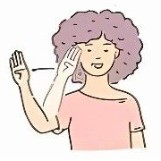
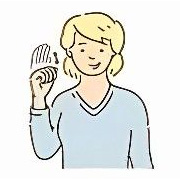
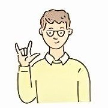

Hello 
Goodbye 
I love you 
Please 
HZJHrvatski znakovni jezik
ASL Američki znakovni jezik
BSL Britanski znakovni jezik
ljudi diljem svijeta koristi znakovni jezik kao primarni jezik
Hello 
Goodbye 
I love you 
Please
| naziv | opis | poveznica | |
|---|---|---|---|
| Talking hands | Besplatna online platforma. Sadrži 28 lekcija raspoređenih u 7 tematskih cjelina. | Odvedi me na stranicu Talking hands | |
| Spread the sign | Rječnik znakovnog jezika, dokumentirano je više od 400 000 znakova na različitim jezicima. Znakove je moguće tražiti preko tražilice, ali i kategorija poput boje, zanimanja, pridjevi i sl. | Odvedi me na stranicu Spread the sign | |
| Udžbenik hrvatskog znakovnog jezika | Besplatan PDF udžbenik za početnu razinu učenja znakovnog jezika. Osim lekcija u njemu se nalaze i QR kodovi za video tutoriale te pitanja za ponavljanje na kraju svake cjeline. | Odvedi me na stranicu s udžbenikom | |
| Svi izvori su besplatni i dostupni online! | |||
Pogledaj kako izgleda dvoručna abeceda HZJ-a: